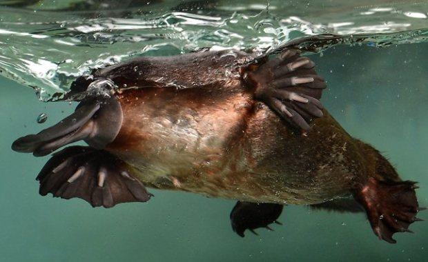
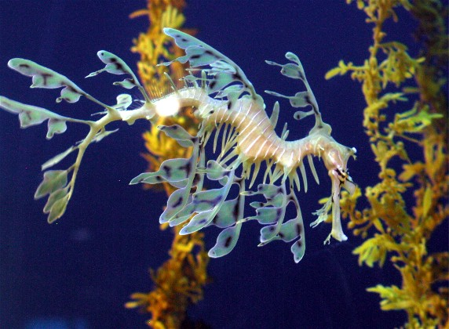
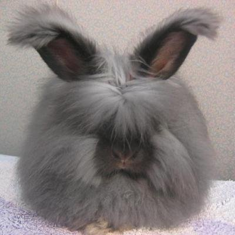
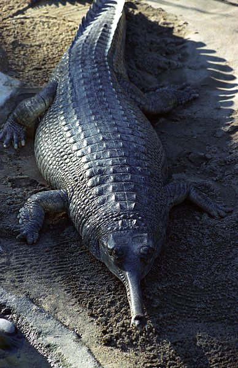
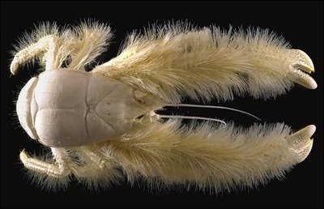

Please move within range of the Relaxation iBeacons.

Näbbdjur
Näbbdjur (en. Platypus), är en av få däggdjur som är giftiga. Är även äggläggande. Den har sina ögon stängda när den simmar under vattnet, bytet söks med hjälp av att känna av tryck förändringar med hjälp av trycksensorer och elektriska receptorer i näbben

Flikfisk
Flikfisk (en. Leafy sea dragon), är en ganska nära släkting till sjöhästen. Bladen används som kamouflage och för att kunna förflytta sig. Namnet Phycodurus kommer från grekiskans ord phykon (sjögräs) och dora (hud).

Angorakanin
Angorakanin (en. Angora rabbit), har sin rötter i Turkiet och det är en riktigt hårig kanin som ger fyra gånger så mycket ull som ett får per kilo kroppsvikt. Angoran har en mycket lång och snabbväxande päls. Har enligt vissa forskare uppstått av en mutation av vanliga kaniner. Angorakaniner avlas främst för ullproduktion, men även som sällskapsdjur.

Gavial
Gavial (en. Gharial), är det enda arten inom sin familj gavialer som fortfarande lever. De enda exemplaren av arten hittar man i Indien. Till skillnad från sina liknande ”släktingar” krokodilen och alligatorn behöver den inte ha lika stora käftar p.g.a. att den endast äter mindre fiskar. Tyvärr är gavialen starkt utrotningshotad och det finns bl.a. uppfödning områden i Nepal, där man föder och gavialer för att sedan slussa ut dem i det vilda. Exemplar kan bli upp till 6.5 meter lång och ofarlig för människor. Perfekt som husdjur med andra ord.

Kiwada
Kiwada (en. Yeti Crab),är en ganska ny art och pptäcktes först 2005 i Stilla havet på 2200 meters djup . Den kallas även ”yeti crab” p.g.a. av sitt håriga utseende. Den är en tio fotig kräftdjur med päls som blir runt 15 cm. Det latinska namn Kiwa Hirsuta kommer från; Kiwa, skaldjurens gudinna i den polynesiska mytologin och Hirsuta som betyder ”hårig” på latin.